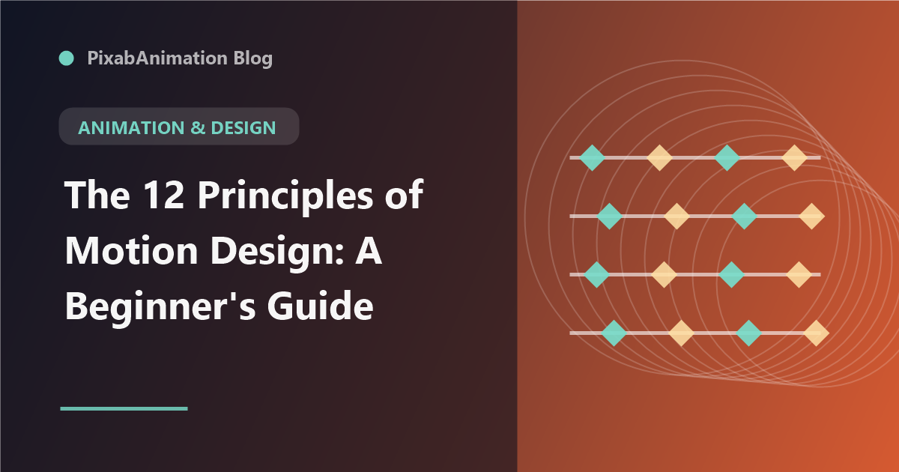

The 12 Principles of Motion Design: A Beginner's Guide

Just as the 12 principles of animation transformed traditional animation, the principles of motion design provide the foundation for creating compelling, professional-quality motion graphics. Whether you are animating UI elements, creating explainer videos, or designing broadcast graphics, understanding these principles is essential for creating motion that feels intentional, polished, and engaging.
1. Easing and Timing
Easing — the acceleration and deceleration of motion — is the single most important principle in motion design. Real-world objects do not move at constant speeds; they accelerate from rest and decelerate to a stop. in After Effects, the graph editor provides precise control over easing curves. Fast ease-ins create snappy, energetic motion while slow ease-outs create smooth, graceful deceleration. Mastering easing transforms amateur animations into professional work.
2. Anticipation and Follow-Through
Anticipation prepares the viewer for an action — a brief backward movement before launching forward. Follow-through continues motion beyond the main action, with parts of an object continuing to move after the primary motion stops. These principles create natural, believable movement that mimics real-world physics.
3. Staging and Composition
Staging guides the viewer's attention to the most important element at each moment. In motion design, this means using position, scale, color, and motion to direct focus. Effective staging ensures the viewer always knows where to look, preventing confusion and enhancing communication.
4. Overlap and Secondary Motion
In natural motion, different parts of an object move at different times. Overlap creates this effect by offsetting the timing of related elements. Secondary motion adds movement that results from the primary action — like a character's hair moving after their head turns.
5. Arcs and Paths
Natural motion follows curved paths, not straight lines. Applying arc-based motion to elements creates fluid, organic movement. Straight paths feel mechanical and robotic, while arcs create elegance and visual interest.
6. Exaggeration and Appeal
Exaggeration amplifies motion beyond realistic levels to emphasize meaning and create visual interest. Appeal refers to the overall aesthetic quality of the animation — clean design, pleasant motion, and engaging presentation. Together, these principles create memorable, enjoyable motion design.
7. Solid Drawing and Depth
In motion design, solid drawing means maintaining consistent volume, perspective, and spatial relationships throughout the animation. Using depth through shadows, overlapping elements, and parallax creates dimensional space that engages viewers.
8. Squash and Stretch
Squash and stretch gives objects a sense of weight and flexibility. When a ball hits the ground, it squashes; when it bounces up, it stretches. This principle is essential for organic, lively animation and applies to everything from bouncing text to character motion.
9. Hierarchy and Emphasis
Visual hierarchy organizes elements by importance, guiding the viewer through the animation in the intended sequence. Size, position, color, motion speed, and timing all contribute to establishing clear hierarchy. Without intentional hierarchy, motion feels chaotic and unfocused.
10. Consistency and Rhythm
Consistent motion language — using the same easing curves, timing patterns, and animation styles — creates cohesive experiences. Rhythm establishes predictable patterns that viewers can follow, making complex animations feel organized and intentional.
11. Feedback and Response
Interactive motion design requires clear feedback — elements respond to user actions with appropriate animations. Hover states, click responses, and transition animations confirm user actions and create satisfying interactive experiences.
12. Storytelling Through Motion
Every animation should tell a story or communicate an idea. Motion should serve the narrative, not exist for its own sake. Intentional, purposeful motion that advances the message or enhances understanding is the hallmark of professional motion design.
"The principles of motion design are not rules to be followed — they are tools to be applied. Understanding when and how to use each principle distinguishes professional motion designers from beginners." — Motion Design Education, 2026